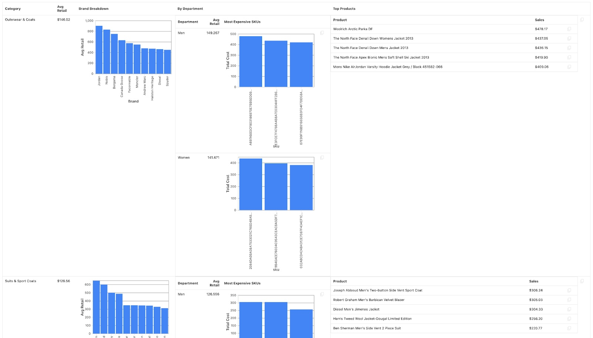
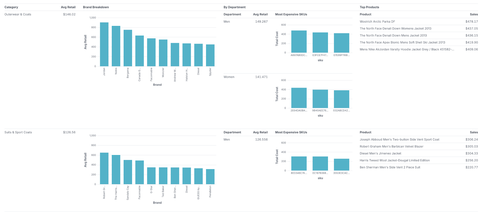

All Posts
All Posts
January 9, 2024 by The Malloy Team
Happy New Year from the Malloy Team! The end-of-year holiday break gave us all an opportunity to reflect on the accomplishments of the year and ponder what’s to come. To start the year, I’d like to give a quick rundown of what we’re excited about on our 2024 roadmap.
Analytical Completeness
As the Malloy community grows, we have folks from all over the world testing the limits of the language with their use cases. Most of these folks are coming to us with an advanced knowledge of SQL, and their use cases often rely on sophisticated SQL features such as window partition clauses and sliding window frames that are not yet expressible in Malloy. At the start of the year, we’re making a concerted effort to close these gaps. While there are existing workarounds today with the Turducken (a clause that allows embedding SQL in Malloy and vice versa), we want to make this a rare bird. At the start of the year, we’ll be filling these gaps and implementing partition clauses, percentile functions, and a way for you to call any arbitrary aggregate or window function in the underlying database.
Even More Magical Rendering
Existing data renderers only work well with tabular data, where the data is laid out in rows and columns. Building a renderer to natively handle nested data opens up some fascinating opportunities for visualization. Malloy breaks free from the standard rectangular paradigm of data, and we’re making major improvements to how these hyperdimensional result sets are presented. Nested queries allow you to inspect your dataset from multiple levels of granularity simultaneously, creating what are effectively entire dashboards with a single query. As a sneak preview, here’s an example screenshot showing a complex, nested result from a single Malloy query in our current renderer, versus how it will look in the improved renderer:
Legacy renderer
Improved renderer
We’re making a ton of other improvements as well: fixed column headers, fine-grained control over how charts are shown, sparklines, interactivity, and more. If you’re building an application with Malloy, and want to take advantage of our renderer, it’s simple to include in your own codebase. Check out the Svelte app example on our Github repo.
Parameters - Reusability, Composability, and Dynamic Filtering
Today, Malloy users enjoy a level of composability and reusability that is completely absent from SQL via our semantic modeling concepts. We want to push this even further by introducing parameters into the language. Parameters in Malloy will allow the same artifact to be used in many different contexts, such as different customers inside of a multi-tenant SaaS application. A large percentage of our most passionate users are engineers who are building analytics-focused applications, and this functionality allows them to write a single data model and re-use it across different environments. Parameters will unlock powerful functionality for analysts and data scientists as well, such as the ability to build dashboards with dynamic time ranges and filters. You can read more about the proposal for implementing parameters and contribute to the discussion here.
Database Connections
The overarching mission of the Malloy team is to replace SQL for analytics. In order to achieve this goal, we need to make sure that users can run Malloy code anywhere that SQL runs. There are a huge number of databases out there that speak SQL, and it would be foolish for a team of our size to build connectors for all of them. Instead, we’re working on a different approach – we’re going to decouple the core Malloy language from the database connection code, and make it as easy as possible to write a custom database connection for Malloy. Our goal is to have an ecosystem of third-party connectors to handle the long-tail of database support, and if your desired database is not yet supported, it should be simple to get one up and running. Finally, we know that in order for Malloy to be successful, there’s a small number of cloud-native data warehouses that will need first-class support, and we’ll be investing in this in 2024.
A World Class IDE for Data Developers
Software developers have had fantastic tooling for many years now. By comparison, data teams are living in the dark ages. We’re trying to build a first class development environment for data folks on par with what is available to other software domains, and so we put enormous effort into making our VS Code extension the best place for data modelers to do their work. Expect to see more tooling to make working with your data in Malloy a smooth and joyful experience. Some things to look forward to are improved code-completion, support for drilling into measures to look at more granular data, scratchpad support in Malloy notebooks, and allowing the VSCode extension to take advantage of the pluggable database connections described in the previous section.
Conclusion
We’re a small team at the start of our journey, but we have huge ambitions. The above list is just a sampling of what we hope to achieve in the coming year. We love hearing feedback and suggestions, so if you’re excited about any of this, or you feel something is missing, we want to hear about it – join the Malloy community Slack channel and drop us a line!